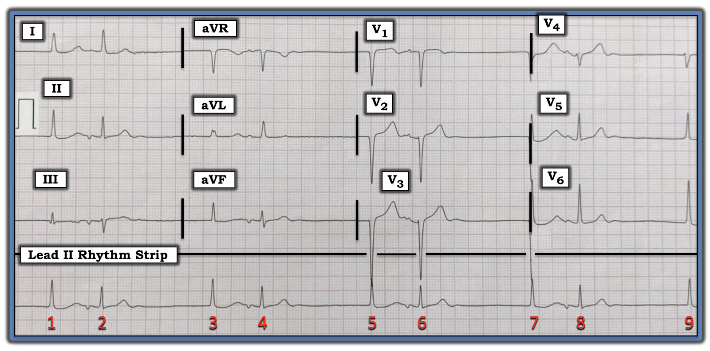
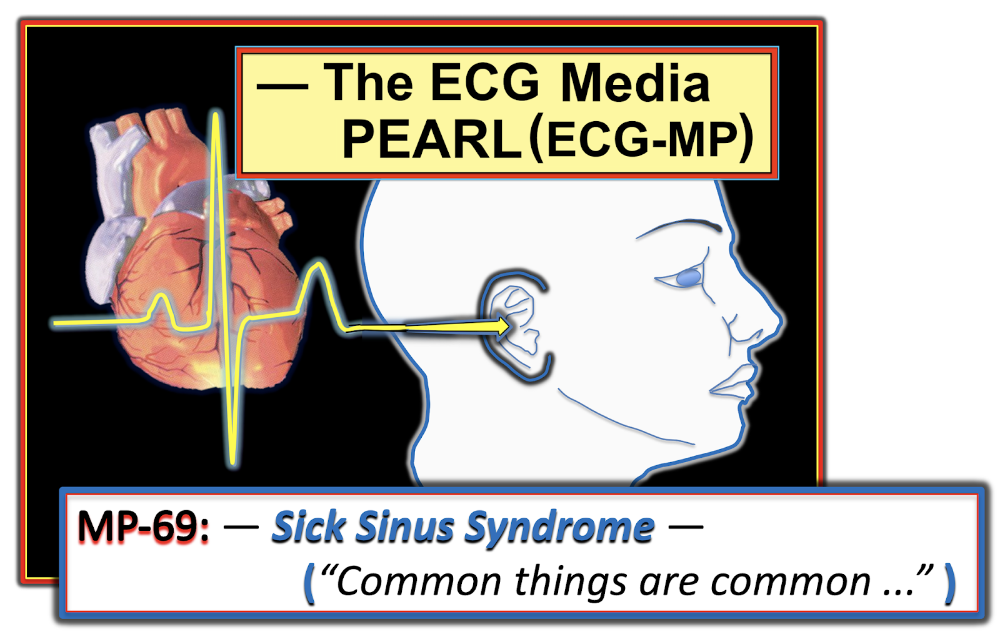
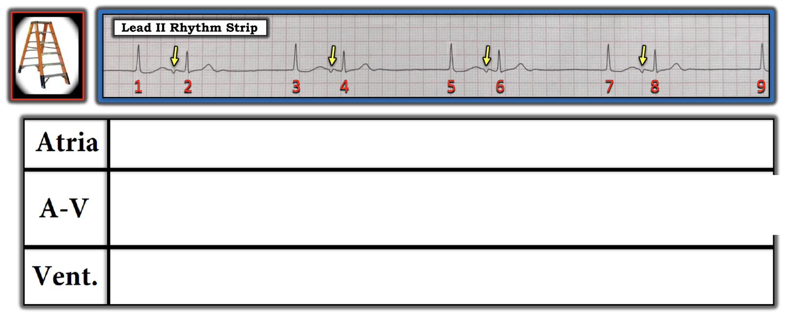
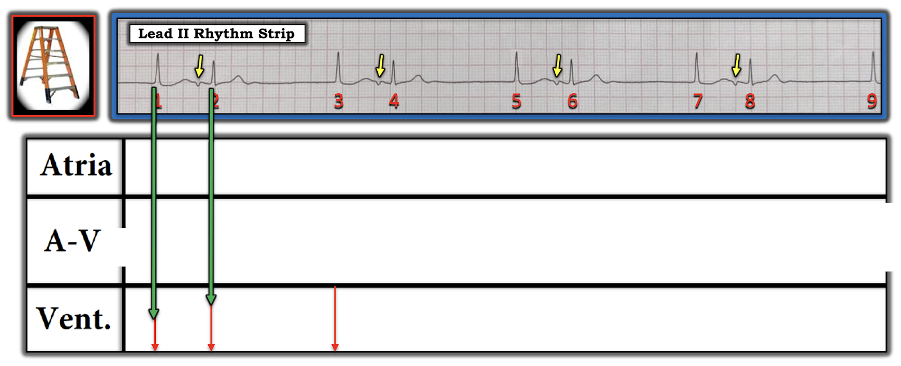
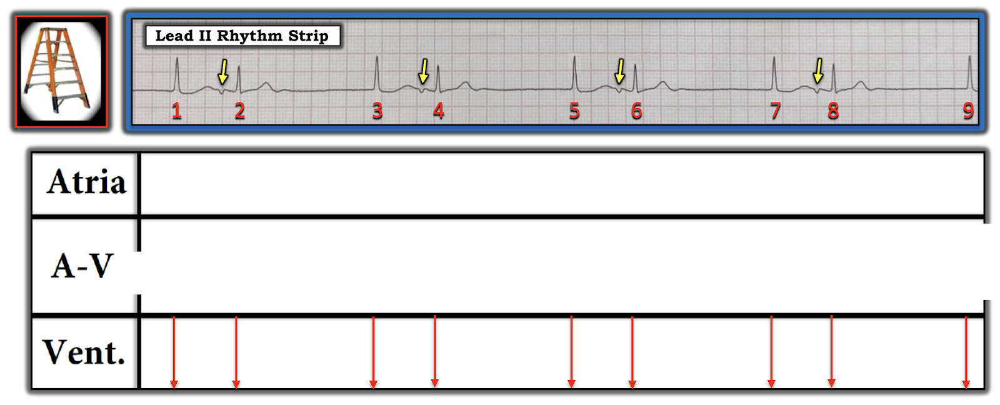
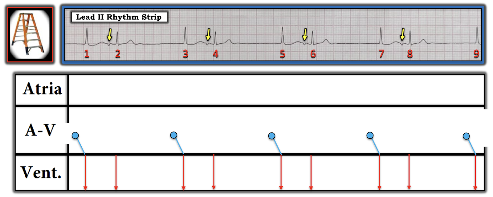
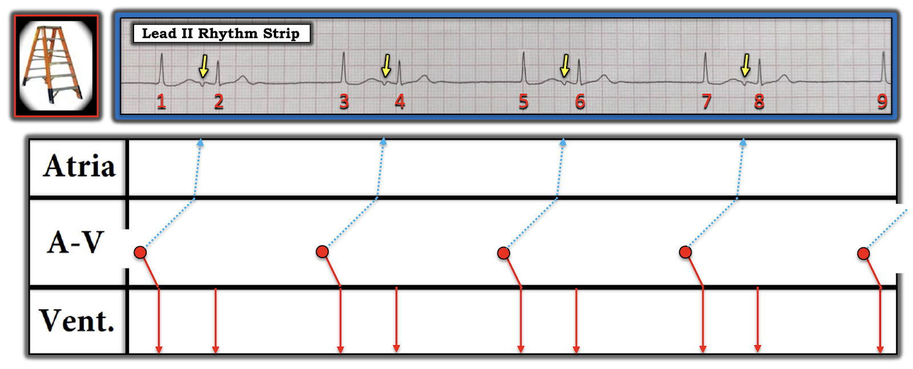
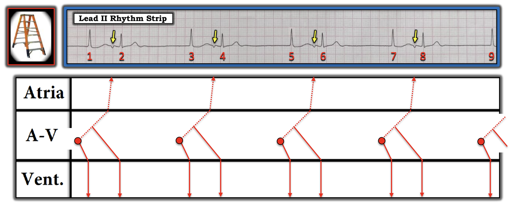

ECG Blog #256 — Một kiểu nhịp đôi đặc biệt
Điện tâm đồ trong Hình-1 được ghi ở một phụ nữ lớn tuổi được phát hiện có mạch chậm.
- Bạn có giải thích được nhịp này không?


=======================================
LƯU Ý: Đến đây, một số bạn đọc có thể muốn nghe ECG Audio PEARL dài 6:15 phút trước khi đọc Suy nghĩ của tôi về điện tâm đồ trong Hình-1. Bạn có thể xem Suy nghĩ của tôi về bản ghi này bất cứ lúc nào (nằm bên dưới ECG MP-68).
=======================================

Bài hôm nay: ECG Media PEARL #68 (6:15 phút Audio) — Ôn lại ý nghĩa của thuật ngữ "Escape-Capture" – thoát–bắt được (đây là một dạng đặc biệt của nhịp đôi).


Audio Pearl thứ 2 hôm nay = ECG Media PEARL #69 (2:45 phút Audio) — Ôn lại các dấu hiệu điện tâm đồ của SSS = Sick Sinus Syndrome – hội chứng suy nút xoang (trích từ Audio Pearl trình bày trong Blog #252).
Suy nghĩ tuần tự của tôi khi đọc bản ghi này:
Như mọi khi — tôi bắt đầu cách tiếp cận hệ thống với nhịp bằng việc đánh giá Ps, Qs và 3Rs (đã bàn chi tiết trong ECG Blog #185).
- P (sóng P) — Sóng P xoang bình thường không thấy trên bản ghi này (tức là Không thấy sóng P dương nào trên dải nhịp chuyển đạo II dài).
- Phức bộ QRS hẹp ở mọi nhát trong bản ghi này. Điều này khẳng định nhịp là trên thất.
- Nhịp rõ ràng không hoàn toàn Regular (đều) — nên Rate (tần số) thay đổi. Lùi ra xa bản ghi một chút để nhìn tổng thể — sẽ thấy rõ có nhịp theo nhóm (group beating) do một nhịp đôi (bigeminal rhythm; tức là các nhóm 2 nhát lặp lại, mỗi nhóm cách nhau một khoảng ngưng ~1,5 giây). Với độ dài của các khoảng ngưng này — tần số tim chung là chậm (tức là Có nhịp chậm).
LƯU Ý: Tuy không thấy sóng P xoang trong Hình-1 — nhưng có bằng chứng của một loại hoạt động nhĩ khác, dưới dạng một sóng P âm ở chuyển đạo II dài, xuất hiện sau nhát thứ 1 trong mỗi nhóm (Xem các mũi tên VÀNG trong Hình-2).
- Về R thứ 3 trong cách tiếp cận Ps, Qs, 3R (tức là "Relation" – mối liên quan giữa sóng P và các phức bộ QRS lân cận) — Có phải trông như khoảng cách từ QRS đi trước đến mỗi sóng P âm này là hằng định? Do đó, các sóng P âm này trong Hình-2 có liên quan với phức bộ QRS đi trước chúng.
- Các sóng P âm này cũng liên quan với phức bộ QRS đi sau chúng — vì khoảng PR trước các nhát #2, 4, 6 và 8 trong Hình-2 là hằng định. Vì vậy, các nhát hẹp này (tức là các nhát #2, 4, 6 và 8) có được dẫn truyền!

ĐIỂM THEN CHỐT (PEARL) #1: Nhát thứ 1 trong mỗi cặp nhát thấy ở Hình-2 hẳn phải là một nhát thoát bộ nối vì tần số chậm, phức bộ QRS của các nhát #1, 3, 5, 7 và 9 hẹp (do đó là trên thất) — và các nhát này không có sóng P xoang đi trước.
- Ủng hộ việc các nhát #1,3,5,7 và 9 là các nhát thoát bộ nối (hoặc bó His) — là phát hiện rằng khoảng R-R đi trước mỗi nhát này đều như nhau (tức là kéo dài gần 8 ô lớn — tương ứng với tần số thoát bộ nối chỉ dưới 40/phút).
ĐIỂM THEN CHỐT (PEARL) #2: Có 2 cách giải thích khả dĩ cho các sóng P âm (mũi tên VÀNG) thấy trong Hình-2. Các khả năng này gồm:
- Các sóng P âm có thể là PAC xuất hiện với khoảng ghép cố định sau mỗi nhát thoát bộ nối.
- HOẶC — Lý do các sóng P được đánh dấu bằng mũi tên VÀNG lại âm ở dải nhịp chuyển đạo II dài có thể là vì các sóng P này được dẫn truyền ngược dòng (đi ngược lên) từ mỗi nhát thoát bộ nối. Dù không thể chứng minh chỉ từ một điện tâm đồ duy nhất này — khả năng thứ 2 có vẻ cao hơn nhiều. Như đã giải thích trong ECG Blog #239 — Nhát dội (echo) dễ xảy ra nhất sau một giai đoạn dẫn truyền chậm trễ, và khoảng RP' thấy ở Hình-2 (tức là khoảng cách từ mỗi nhát thoát bộ nối đến sóng P âm theo sau nó) rõ ràng kéo dài. Sự dẫn truyền ngược dòng chậm trễ này tạo thêm cơ hội để các điều kiện "vừa đúng", cho phép xung động ngược dòng "quay đầu" và dẫn truyền xuôi xuống (tức là tạo ra một nhát tương hỗ (reciprocal) hay nhát "dội" (echo)).
Dựng GIẢN ĐỒ BẬC THANG:
Một hình ảnh bằng 1.000 lời nói. Cơ chế phức tạp của ca hôm nay được giải thích rõ nhất bằng cách dựng từng bước một giản đồ bậc thang – Laddergram (Xem ECG Blog #188 để ôn lại cách đọc và/hoặc vẽ giản đồ bậc thang).
- Các chú thích tuần tự qua 7 Hình tiếp theo minh họa quá trình suy nghĩ của tôi khi dựng giản đồ bậc thang cuối cùng ở Hình-9 bên dưới.













DIỄN TIẾN của ca hôm nay:
Bệnh nhân trong ca hôm nay được theo dõi Holter 24 giờ. Kết quả ghi Holter khẳng định người phụ nữ lớn tuổi này bị hội chứng suy nút xoang (Sick Sinus Syndrome) — và bà đã được cấy máy tạo nhịp vĩnh viễn.
- Như đã ôn trong Audio Pearl #69 (ở trên) — muốn chẩn đoán SSS cần loại trừ các nguyên nhân khác có thể gây nhịp chậm. Ngoài sóng T hơi "đồ sộ" ở chuyển đạo V4 — điện tâm đồ 12 chuyển đạo của ca hôm nay (như trong Hình-1) không gợi ý thay đổi sóng ST-T cấp. Thăm dò trên bệnh nhân này đã loại trừ các nguyên nhân "có thể khắc phục được" của rối loạn nhịp (tức là không dùng thuốc làm chậm nhịp — không có thiếu máu cục bộ-nhồi máu gần đây — không suy giáp — không ngưng thở khi ngủ).
- Giản đồ bậc thang ở Hình-9 hàm ý một số đặc điểm điện tâm đồ phù hợp với chẩn đoán SSS. Gồm: i) Giả định có nhịp chậm xoang rõ rệt (và/hoặc các khoảng ngưng xoang kéo dài) là lý do một nhịp thoát bộ nối chậm có thể chiếm quyền; ii) Ngoài một nút xoang "bệnh" — giản đồ bậc thang ở Hình-9 gợi ý còn có một "nút AV bệnh", vì tần số của nhịp thoát bộ nối chậm hơn dự kiến (tức là hơi thấp hơn 40/phút); và, iii) Khoảng RP' dài sau mỗi nhát bộ nối gợi ý rằng có thể có một yếu tố blốc AV.
- T.B. (P.S.) (Vượt ra ngoài phần cốt lõi): Một điểm cuối cùng đáng lưu ý vì mục đích học thuật — là hình dạng QRS của các nhát thoát bộ nối (tức là các nhát #1,3,5,7 và 9) — hơi khác so với hình dạng QRS của mỗi nhát bắt được (tức là, các nhát #2,4,6 và 8 — cho thấy rõ những khác biệt nhỏ so với các nhát bộ nối ở cả 6 chuyển đạo chi). Lý do của khác biệt nhỏ về hình dạng QRS này có thể là: i) dẫn truyền lệch hướng; hoặc, ii) Tùy theo ổ thoát phát xuất từ phần nào của nút AV — đường đi (và do đó hình dạng QRS) của các nhát thoát bộ nối có thể hơi khác nhau.
==============================
Lời cảm ơn: Xin cảm ơn Feroz Haroon (từ Kashmir, Ấn Độ) đã chia sẻ ca bệnh và bản ghi này.
==================================
Các ECG Blog liên quan tới Audio Pearl hôm nay:
- ECG Blog #185 — Ôn lại Cách tiếp cận Ps, Qs & 3R trong đọc nhịp có hệ thống.
- ECG Blog #188 — Ôn lại cách hiểu (và cách vẽ) Giản đồ bậc thang!
- ECG Blog #239 — Ôn lại khái niệm Nhát dội (Echo Beats) và các ứng dụng lâm sàng của nó (trình bày một ca nhịp đôi bất thường do Wenckebach AV qua đường dẫn truyền kép trong nút AV, được kết thúc bởi các nhát dội).
- ECG Blog #232 — Để ôn lại một nhịp đôi (bigeminal rhythm) do Wenckebach AV 3:2 kín đáo. (LƯU Ý: Audio Pearl trong bài này dành cho khái niệm Nhịp đôi).
- ECG Blog #243 — Để ôn lại một nhịp đôi (bigeminal rhythm) do cuồng nhĩ (AFlutter) với dẫn truyền Wenckebach hai tầng ra khỏi nút AV.
- ECG Blog #252 — Để ôn lại một nhịp đôi (bigeminal rhythm) do nhịp ba nhĩ với các PAC bị blốc.
- ECG Blog #206 — Để ôn lại một ca hấp dẫn về nhịp đôi (bigeminal rhythm) do Wenckebach AV 3:2 kèm blốc phân nhánh luân phiên.
- ECG Blog #163 — Nhịp đôi thoát–bắt được (Escape-Capture) (với nhịp chậm xoang và nhịp thoát bộ nối đi kèm — và có thể còn có blốc SA).